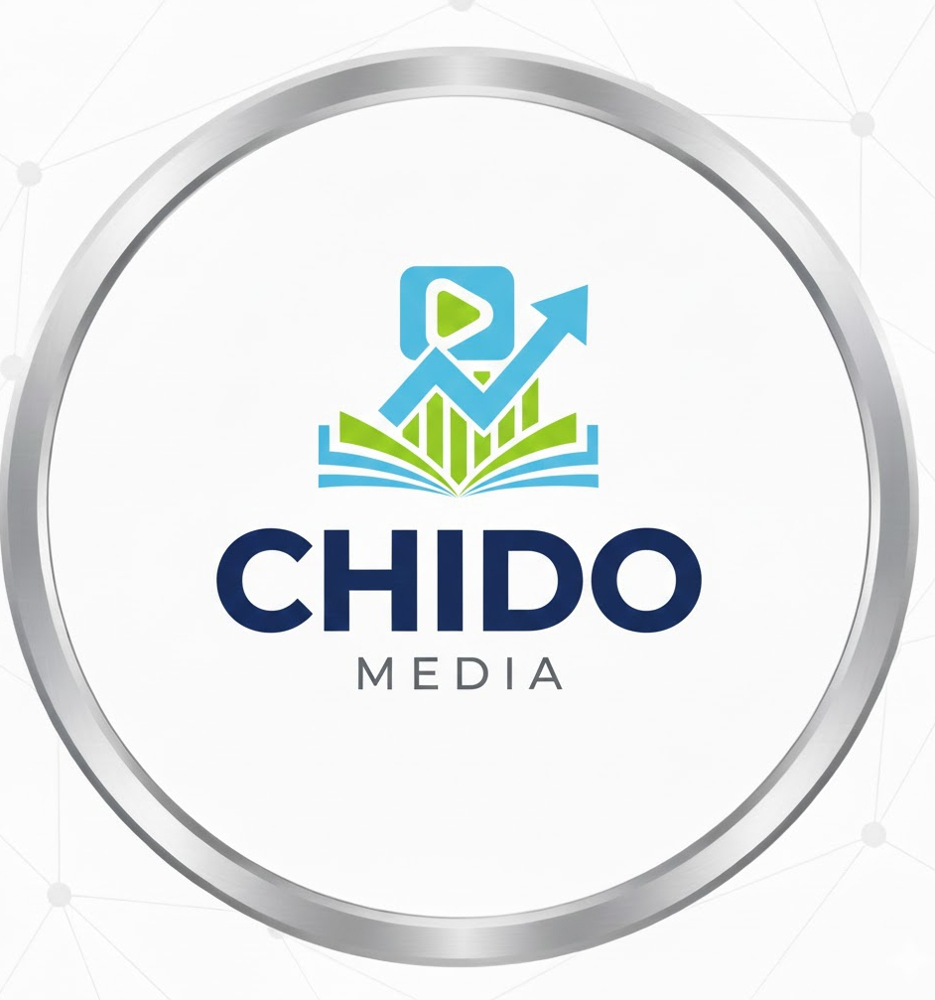
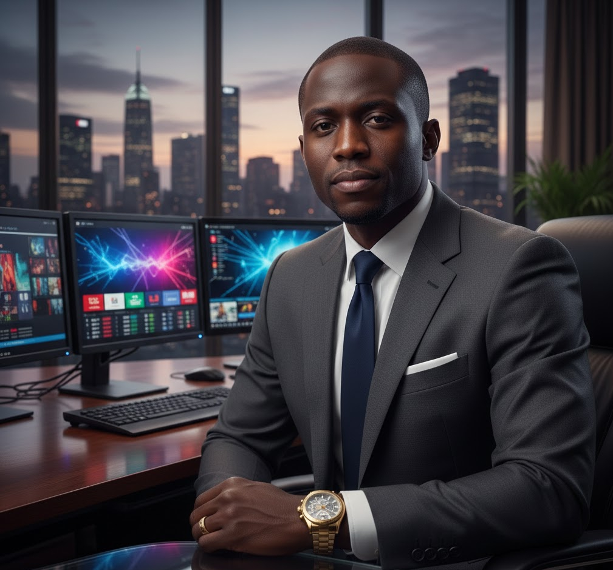

Chido Entrepreneur
Chido Entrepreneur is owned by the CEO Ifenaboh Chidiebere, Chido Entrepreneur also operates in technology, real estate, and building companies. Its media and housing services around the world have helped many people become reliable and independent.
Chido Entrepreneur
- Multi-Media
- Real Estates
About the CEO
Ifenaboh Chidiebere
Chief Executive Officer (CEO)
Media • Real Estate • Technology
Ifenaboh Chidiebere is the dynamic and visionary Chief Executive Officer of Chido Entrepreneur, a multi-sector company combining the power of media, real estate, and technology to shape modern business opportunities. With a background in digital technology and a strong passion for creative media and property development, the CEO has built a company that stands at the intersection of innovation and growth.
A true entrepreneur, Ifenaboh Chidiebere is known for identifying market opportunities and turning them into successful ventures. Their leadership approach blends modern technology, strategic thinking, and a deep understanding of both media influence and real estate value.
Leadership Vision
Their leadership focuses on:
- Media: Building digital media platforms, content strategies, branding services, and communication solutions.
- Real Estate: Developing and managing properties that bring value to clients, investors, and communities.
- Technology: Using tech tools, digital systems, and software solutions to modernize both media and real estate operations.
- Leveraging technology to improve business performance
- Expanding the company across multiple industries Encouraging innovation, collaboration, and entrepreneurial growth
Achievements
- Successfully launched media platforms and digital content services
- Developed and managed real estate projects for residential and commercial use
- Introduced technology solutions that streamline business processes
- Trained young people in digital media, tech skills, and entrepreneurship
- Built a reputation as a versatile and forward-thinking company
Mission of the CEO
The CEO’s mission is to position Chico Entrepreneur as a leading brand in Africa’s media, real estate, and tech space. By combining creativity, property value, and digital innovation, Ifenaboh Chidiebere aims to create solutions that inspire growth, empower communities, and shape the future of modern business.
Ifenaboh Chidiebereis a innovative leader whose work continues to drive Chico Entrepreneur to new heights. With expertise in media, real estate, and technology, the CEO is committed to building a company that stands for progress, excellence, and entrepreneurial success.d
back